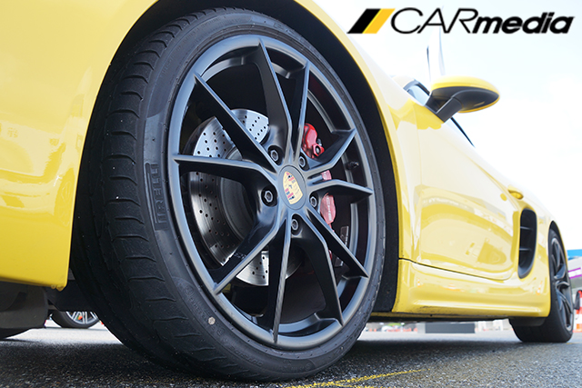

6기통 이기는 4기통, 포르쉐 718 박스터 S

【인제(강원도) = 카미디어】 윤지수 기자 = 4기통이란 게 믿기지 않았다. 카랑카랑하게 갈라지는 배기음과 화끈한 가속력은 2.5리터 4기통 엔진의 느낌이 아니었다. 6기통 3.4리터 박스터 GTS와 함께 달려도 718 박스터 S는 더 빨랐다. 터보의 저력은 굉장했다. 13일 인제 서킷에서 718 박스터 S를 시승했다. 시승기를 쓰기엔 짧은 주행이었지만, 고저차가 심한 인제 서킷에서 이 차가 품고 있는 기본기를 어느 정도 체험할 수 있었다. 결론부터 얘기하면, 6기통에 대한 갈증은 전혀 없었고, 운전 재미만 더욱 늘었다.
솔직히 겉모습은 구형과 비슷하다. 관심 있는 사람 아니면 차이를 구분하기 어려울 정도다. 포르쉐 관계자는 “앞 유리창과 뒷 트렁크 패널, 오픈형 지붕, 대시보드의 아랫부분을 제외한 모든 부위를 새로 만들었다”고 했지만, 전체적인 구성은 달라지지 않았다. 각각의 헤드램프와 테일램프에 들어간 네 개로 나뉜 주간주행등(테일램프는 미등)이 가장 눈에 띄며, 테일램프와 스포일러 디자인이 조금 달라졌다. 구형에서 느껴졌던 포르쉐 특유의 풍성한 볼륨감은 여전하다.
실내도 좌우로 넓게 뻗은 가로 배치 구성과 세로로 뻗은 가운데 센터패시아 등 포르쉐 다운 모습은 그대로지만, 부분적으론 많이 달라진 모습이다. 운전대가 최신 포르쉐를 따라 기계적인 스타일로 바뀌었고, 송풍구도 동그랗게 바뀌었다. 대시보드 위 ‘스티치’ 모양 같은 사소한 것들도 깔끔하게 다듬었다.
치밀한 만듦새는 여전하다. 버튼 하나하나의 조작감과 각 부품 간의 단차 등 흠잡을 데 없다. 직경 376mm의 운전대는 조작감이 좋고 시트는 양옆의 ‘볼스터’가 적당히 튀어나와 여유롭게 운전자를 받쳐준다. 고성능 차의 딱딱한 느낌이 아니라서 한결 편안하다.
서킷에 들어가기 전, 직선 도로에서 가속력을 체험했다. 가속페달을 끝까지 밟자, 718 박스터 S는 호쾌하게 속도를 높이며 뛰쳐나간다. 터보 엔진 특유의 망설임은 느껴지지 않았다. 소리도 4기통이라고는 믿기지 않을만한 카랑카랑한 소리를 냈다. 가속페달을 땔 때, ‘펑’ 터지는 소리는 운전 재미를 더욱 높여준다. 참고로 시승차는 수평대향 4기통 2.5리터 터보 엔진이 들어갔으며, 최고출력은 350마력, 최대토크는 42.8kg.m이다.
두 번째는 ‘런치 컨트롤’을 사용했다. 런치 컨트롤은 브레이크를 밟고 가속페달을 끝까지 밟으면 작동하는 빠른 출발을 돕는 장치다. 이 장치를 사용하면 뒤통수를 한 대 얻어맞은 것처럼 튀어나간다. 처음 사용할 땐 솔직히 깜짝 놀랐다. ‘턱’ 치면서 나가는 게 금방이라도 고장 날 것 같은 기분이다. 하지만 포르쉐는 이 기능을 2,000번까지 보증하고, 오늘 탔던 시승차도 8,000번 이상 사용했지만, 문제는 없었다고 한다. 고장에 대한 염려는 내려놔도 되겠다.
가속 체험 후 드디어 서킷에 올랐다. 빠른 가속 후 브레이크로 앞바퀴에 무게를 실은 후 코너 안쪽으로 운전대를 꺾었다. 역시 (엔진이 앞바퀴와 뒷바퀴 사이에 있는) 미드십 구성답게 안정적으로 방향을 튼다. 차체의 균형이 워낙 잘 잡혀 있어, 코너에서 자꾸만 차의 한계에 도전하게 된다. 코너 탈출 중 가속페달을 끝까지 밟아도, 쉽게 바닥을 놓지 않았다.
욕심을 더 내서 빠른 속도로 코너에 진입하면 뒷바퀴가 조금씩 바깥으로 흘렀다. 그런데 차체 무게 배분이 잘 돼 있어 미끄러짐을 제어하는 게 어렵지 않다. 몇 번 미끄러뜨린 후엔 일부러 속도를 높여 오버스티어(운전대를 꺾은 것보다 차가 더 돌아가는 현상)를 유도하기도 했다.
계속되는 서킷 주행에서 인상 깊었던 건 지치지 않는 브레이크 성능이다. 718 박스터 S는 911 카레라에 사용된 앞 브레이크(직경 330mm, 4피스톤)가 들어갔는데, 하루 종일 급제동을 일삼는 서킷을 돌았지만, 컨디션의 변화는 없었다. 뜨거워지면 금방 단단하게 굳어버리는 몇몇 브랜드의 브레이크와는 확연히 다른 모습이다.
서킷 주행만 했기 때문에 부드러운 주행이나 고속 주행의 안정감은 느껴보지 못했다. 물론 뚜껑 열고 달리는 호사도 누리지 못했다. 예상컨대 이렇게 안정된 주행감이라면, 부드럽게 주행할 때도 편안할 것 같기도 하다. 물론 등 뒤에서 폭발하는 배기음을 듣고 질주 본능을 억제했을 때 얘기다.
참고로 프랑스 미쉐린 서킷에서 718 박스터에 동승했던 장진택 기자는 “다이얼로 바뀐 주행 모드 버튼을 돌리면, 각 모드의 편차가 대략 130% 정도 확장된 것 같았다”며, “스포츠 플러스에 놓으면 그립 주행을 넘어 엉덩이를 짜릿하게 날리며 탈 수 있었다”고 설명했다.
시승기가 칭찬 일색이라서 좀 그렇지만, 기자의 짧은 자동차 전문 기자 경험 중에선 가장 짜릿한 차 중 하나였다. 굳이 단점을 들춰내자면, 911보다 코너 진입 속도 한계가 좀 낮았던 걸 들 수 있겠다. 아무튼 718 박스터 S는 미드십 구성의 안정감과 350마력 터보 엔진의 강렬한 가속 등 스포츠카로서 부족함이 없었다. 4기통이라고는 믿기지 않는 배기음까지 더해지니, 6기통 엔진에 대한 갈증은 느낄 틈이 없다.